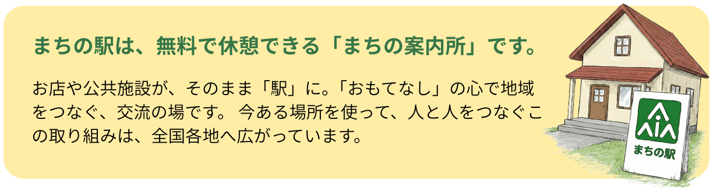
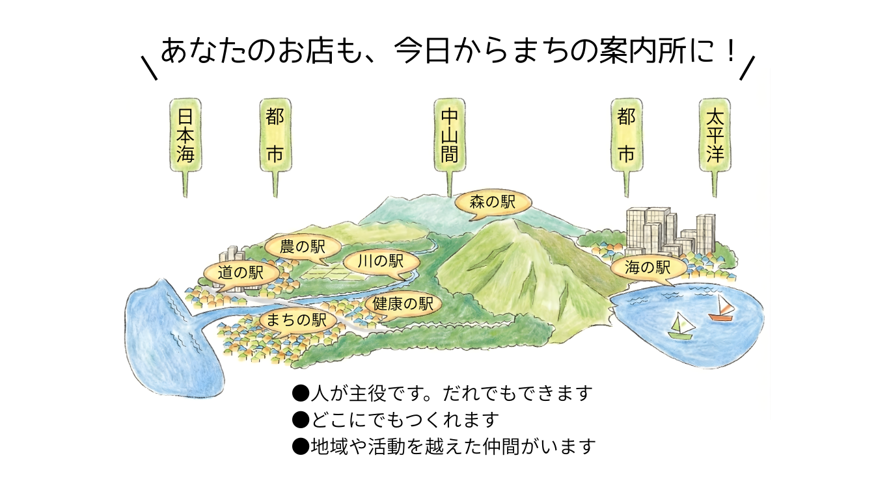
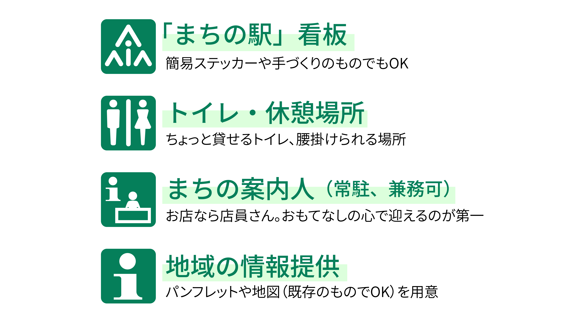

HOME ｜ まちの駅（テストページ） ｜まちの駅とは
まちの駅とは

まちの駅としての『4つの機能』
休憩…誰でもトイレが利用でき、無料で休憩できる。
案内…「まちの案内人」が、地域の情報について丁寧に教える。
交流…地域の人と来訪者の、出会いと交流のサポートをする。
連携…まちの駅間でネットワーク化し、もてなしの地域づくりをめざす。
あなたも「駅長」になりませんか？
必要なのは、場所と「おもてなしの心」だけ。
「自分のまちのために何かしたい！」その想いがあれば、個人・団体・行政・民間を問わず、誰でも「まちの駅」を開設できます。
- 場所は自由：まちの中でも山の中でも、海のそばでも…どこにでも設置できます。既存の施設やお店が「まちの駅」になれます。
- テーマも自由：福祉、アート、農業、観光など、あなたの活動テーマに合わせて運営できます。

これさえあればまちの駅
まちの駅になるためには、以下のアイテムが必要になります。
※まちやまちの駅で差別化して欲しい情報や、ニーズは少なくても知らせたい情報などはそれぞれのまちの駅で自由に提供していただいて問題ございません。

つながることで生まれるメリット（ネットワーク効果）
まちの駅同士がネットワークを結ぶことで、1つの拠点だけではできない効果が生まれます。
{{ m.title }}
{{ m.desc }}